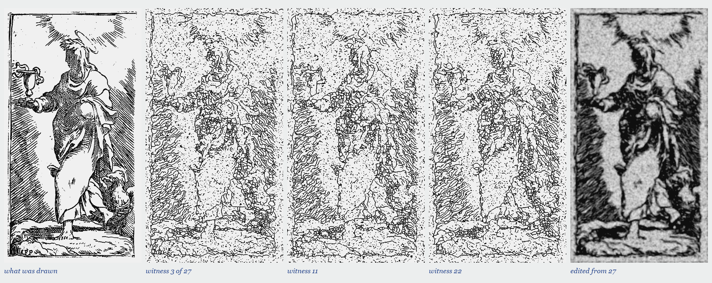
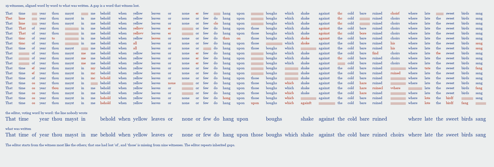
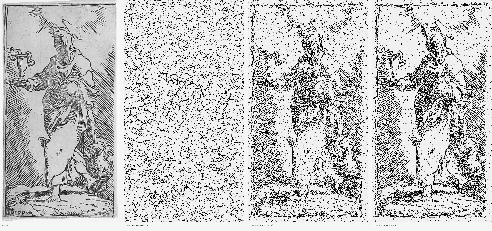

Left, the St. John of the Master F. P. (Met 397701). Then three of 27 hand-copies in a tree: each branch is five copies made without looking back, three branches per copy, three levels deep. Every witness is a wreck, and the wrecks look alike, because they inherit from one another. Right, an editor lays all 27 on top of each other and keeps what most of them agree on. He gets the rays, the chalice, the eagle, the dark of the cloak: a clean, soft saint, in tone where the original is in line. Nobody engraved this plate. Measured as correlation of ink density at coarse scale, the print against a witness is 0.82 on average (0.81 to 0.83) and against the edit 0.93. The metric blurs, which suits an average, so read it as: nearer in tone, not in line.

The same in words. Nineteen copies of a line of Sonnet 73, made by a scribe who confuses u with n and c with e, skips and doubles words, and swaps what he cannot read for a common word, laid out word by word against what was written. Grey: the word is gone. Red: the word was changed. Below, an editor's line made by voting across them, and the poem. His text is nearer the poem than any single witness, and it is a line nobody wrote: That time year thou mayst in behold. The gaps are mostly inherited: one scribe's slip high in the tree is copied by every descendant, and a vote counts each descendant as another witness. (the tree)

A copy that never looks back at the print dissolves into texture; one that looks back a tenth of the time keeps the figure in rags; one that looks back a quarter of the time settles into a style, the machine's cobbled skin worn over the saint. Each copy here is the 120th. Source: St. John the Evangelist, an etching by the Master F. P., 16th century (Met 397701). In every column the shadowed face has been filled with the same cobbles as the robe, the chalice has become a flag, the eagle a mound of stones.
Earlier work, the copyist, in which copies look back at the source or do not: a Coptic ostrakon copied into asemic writing; Tempesta's Hercules, whose face becomes wall; 240 copies with no looking back.